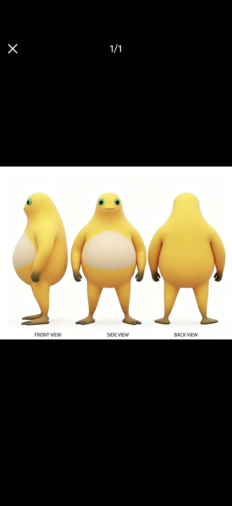
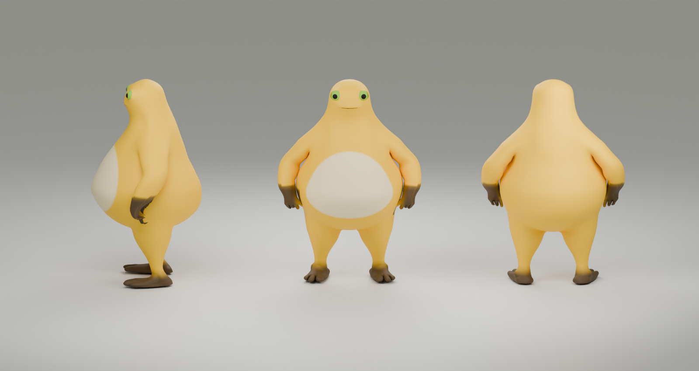
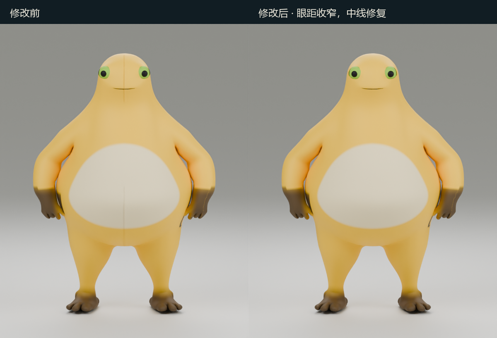
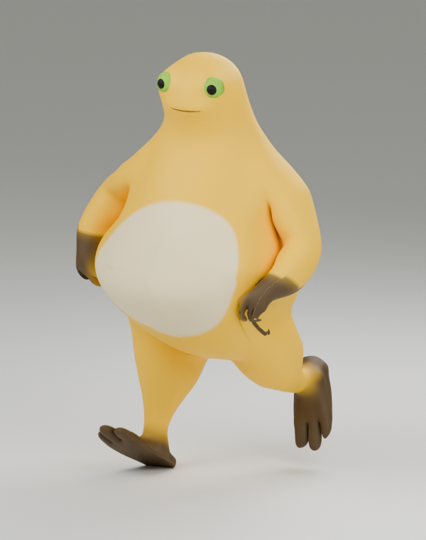
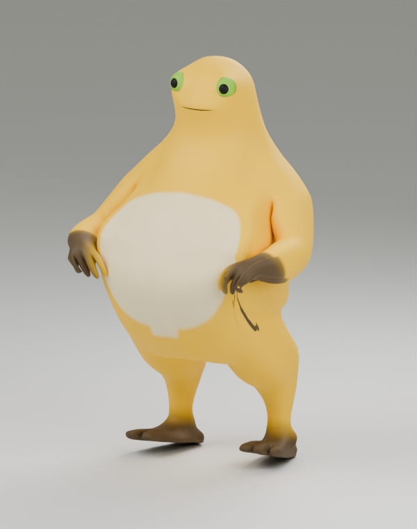
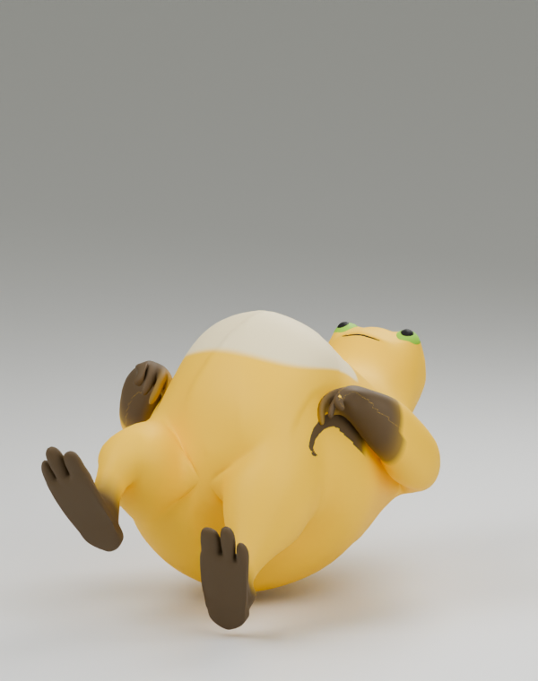
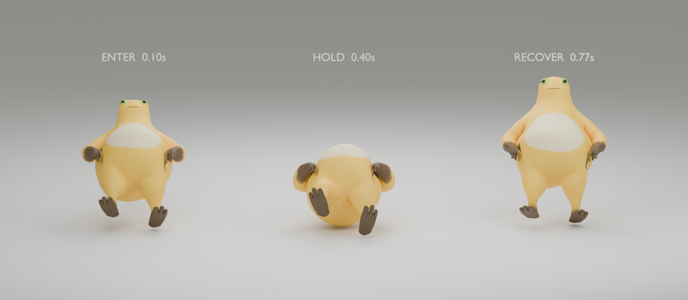
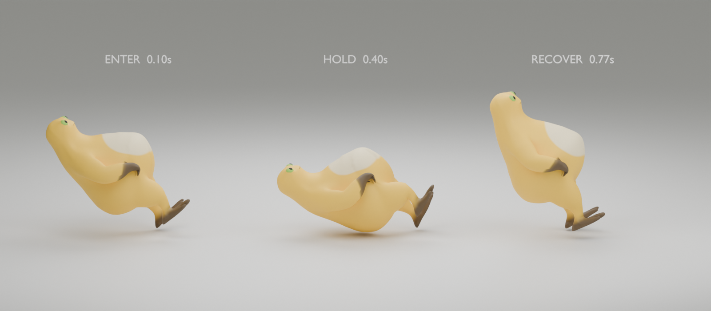

更圆一点，更有奶龙的样子。
CHARACTER REVIEW / 01左：你提供的三视图。右：修改后的实际模型渲染。两边均按「侧面 / 正面 / 背面」排列。
重点调整了腹部宽度与厚度、腿长和手臂长度；眼距已稍微收窄，并清除了头部与肚子下方的中线。


本轮修正：眼距与中线
保留头部轮廓，双眼各向中间移动一点，清除头部和肚子下方的竖线。下图为同角度、同灯光的正面对照，左侧修改前，右侧修改后。


动作检查
下图为骨骼动作的单帧渲染；试玩中的跳跃高度与左右换道由控制器叠加。



滑铲动作分解
从左到右：进入、保持、恢复。试玩模式使用 80% 大小；以下为同一骨骼动作的离线正侧面检查。

